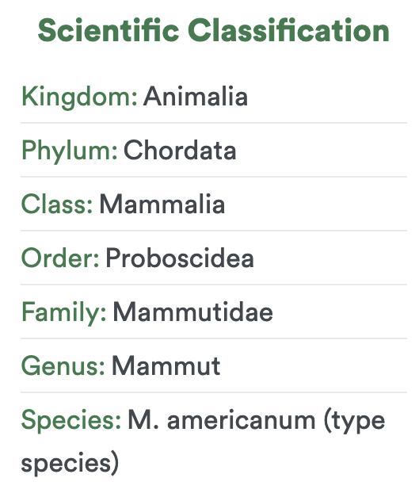
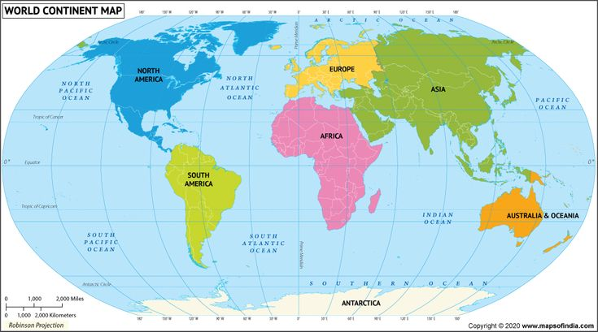

The classification of the Mastodon can be seen in the chart towards the right (provided by extinctanimals.com). The Mastodon is apart of the Kingdom Animalia, the Phylum Chordata, the Class Mammalia, the Order Proboscidea, the Family Mammutidae, and the Genus Mammut.
The name "Mastodon" was originally used for the Genus name. It was eventually changed to its current name "Mammut". However some people still informally refer to the Genus as "Mastodon".

Several fossils attributed to the Genus Mammut have been found in North America, Africa, and Asia. However, only the fossils found in North America have been named and described.
The main species the Mastodon is attributed to is the Mammut americanum. Other species the Mastodon is connected to include the Mammut matthewi, the Mammut raki, the Mammut cosoensis, etc.
As the Mastodon evolved, it lost the small lower tusks seen on the lower jaw. In addition, the Mastodon grew in size as they continued down their evolutionary pathway.
In terms of adaptation, it is believed that the Mastodon adapted to its browsing behavior through their prominent upper tusks which would help cut bark off of trees, giving the Mastodon sustenance.